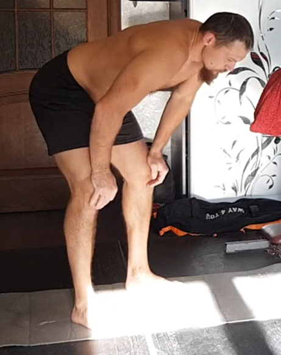
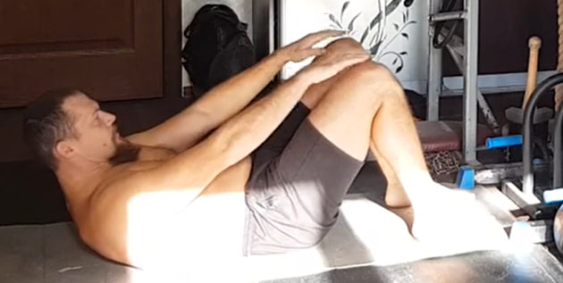
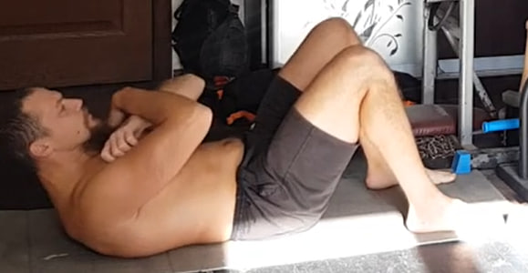
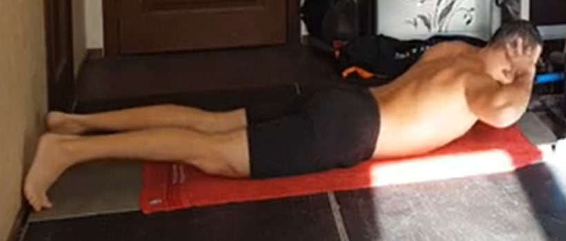
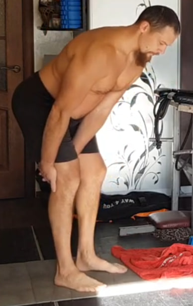
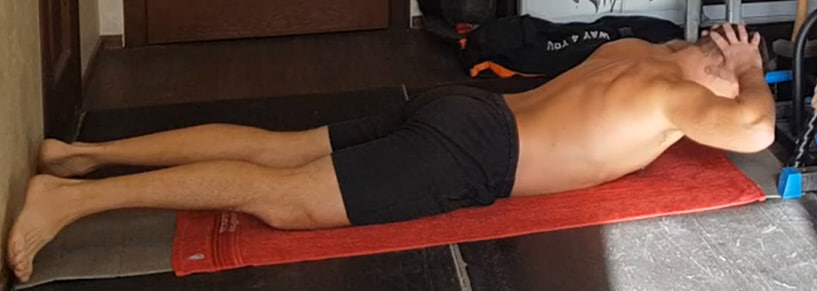
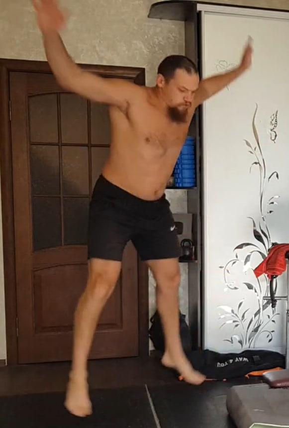

Día 23: core (abdomen y zona media) + isometría y control (sin equipo)
Hoy trabajamos core (abdomen y zona media), isometría y control, piernas y glúteos con ejercicios simples que caben en una habitación. El objetivo es construir fuerza útil, resistencia y control corporal con el mínimo de equipo.
Prioriza la técnica, respira con control y acumula consistencia: incluso una sesión corta suma cuando la repites día tras día.
1. Elevación parcial del abdomen — 20 repeticiones
Antes de empezar: haz el calentamiento y repasa la respiración. (No lo saltes.)

Acuéstate boca arriba con las rodillas flexionadas y los pies apoyados. Lleva las manos hacia las rodillas y eleva el torso sin incorporarte por completo, solo lo necesario para acercarte/tocar las rodillas con las manos. El movimiento es corto, controlado y sin impulsos.
Exhala al subir apretando el abdomen y baja despacio manteniendo el core activo (sin relajar del todo la tensión).
Ejecución: 20 repeticiones.
2. Uddiyana Bandha (versión rápida) — 10 repeticiones

Repite el ejercicio 2 con la misma técnica. Ejecución: 10 repeticiones (cada apnea = 1). Sin tomar aire, mete el abdomen hacia dentro y hacia arriba (vacío) y luego suéltalo hacia afuera, alternando “meter/soltar” varias veces dentro de la misma retención. Ejecución: 10 repeticiones (cada apnea = 1).
3. Elevación parcial del abdomen — 2×15 (o 1×30)

Misma técnica del ejercicio 1. Movimiento corto, controlado y sin impulsos. Exhala al subir y baja despacio manteniendo el core activo.
Ejecución: 2×15 o 1×30.
4. Uddiyana Bandha (versión rápida) — 10 repeticiones

Repite el ejercicio 2 con la misma técnica. Ejecución: 10 repeticiones (cada apnea = 1). Repite el ejercicio 2 con la misma técnica. Ejecución: 10 repeticiones (cada apnea = 1).
5. Elevación parcial del abdomen — 3×10 (o 1×30)

Misma técnica del ejercicio 1. Movimiento corto y controlado. Exhala al subir y baja despacio manteniendo el core activo.
Ejecución: 3×10 o 1×30.
6. Uddiyana Bandha (versión rápida) — 10 repeticiones

Repite el ejercicio 2 con la misma técnica. Ejecución: 10 repeticiones (cada apnea = 1). Repite el ejercicio 2 con la misma técnica. Ejecución: 10 repeticiones (cada apnea = 1).
7. Elevación parcial del abdomen — 40 (2×20 o 1×40)

Misma técnica del ejercicio 1. Movimiento corto y controlado. Exhala al subir y baja despacio manteniendo el core activo.
Ejecución: 40 repeticiones (2×20 o 1×40).
8. Uddiyana Bandha (versión rápida) — 10 repeticiones

Repite el ejercicio 2 con la misma técnica. Ejecución: 10 repeticiones (cada apnea = 1). Repite el ejercicio 2 con la misma técnica. Ejecución: 10 repeticiones (cada apnea = 1).
9. Elevación parcial del abdomen — hasta el agotamiento

Acuéstate boca arriba con las rodillas flexionadas y los pies apoyados. Haz la variante con los brazos cruzados sobre el pecho (o manos hacia las rodillas si prefieres). Eleva el torso sin incorporarte por completo, con recorrido corto y controlado.
Exhala al subir y baja despacio sin relajarte del todo entre repeticiones.
Ejecución: 1 serie hasta el agotamiento.
10. Uddiyana Bandha (versión rápida) — 10 repeticiones

Repite el ejercicio 2 con la misma técnica. Ejecución: 10 repeticiones (cada apnea = 1). Repite el ejercicio 2 con la misma técnica. Ejecución: 10 repeticiones (cada apnea = 1).
11. Hiperextensión isométrica — 10 repeticiones (10 s)
Protocolo isométrico: tensión 10 s + descanso 5 s × 10 repeticiones (por lado, si aplica). Respira 3‑3‑3 durante la tensión (inhalar 3 s, retener 3 s, exhalar 3 s) y usa 3‑6‑3 entre series para recuperar. Más detalles: Respiración.

Acuéstate boca abajo. Manos detrás de la cabeza sin tirar del cuello. Piernas estiradas y activas. Eleva simultáneamente el pecho y las piernas creando una contracción fuerte de la zona lumbar, glúteos y cadena posterior.
Mantén arriba 10 segundos, baja con control y repite.
Ejecución: 10 repeticiones (10 s cada una).
12. Peso muerto isométrico “bloqueado” — 15 por pierna (10 s)
Protocolo isométrico: tensión 10 s + descanso 5 s × 10 repeticiones (por lado, si aplica). Respira 3‑3‑3 durante la tensión (inhalar 3 s, retener 3 s, exhalar 3 s) y usa 3‑6‑3 entre series para recuperar. Más detalles: Respiración.

Ponte de pie e inclina el torso hacia adelante como en un peso muerto, con la espalda firme y recta y el abdomen activo. Apoya las manos sobre los muslos (por encima de las rodillas) para bloquear el movimiento.
Intenta levantarte como si hicieras un peso muerto real, pero las manos impiden que el torso suba: se crea una tensión fuerte en la zona lumbar, glúteos y cadena posterior.
Ejecución: 15 repeticiones por cada pierna.
13. Hiperextensión dinámica — al agotamiento

Acuéstate boca abajo. Manos detrás de la cabeza sin tirar del cuello. Eleva el torso de forma dinámica y continua, subiendo y bajando con control, sin quedarte colgado arriba. Evita “romper” la zona lumbar.
Variación (opcional): solo torso (más suave) o torso + piernas (más intenso).
Ejecución: 1 serie al agotamiento.
14. Saltos estrella — al agotamiento

De pie, pies juntos y brazos abajo. Salta abriendo las piernas hacia los lados y elevando los brazos por encima de la cabeza. Vuelve con otro salto a la posición inicial (pies juntos, brazos abajo).
Aterriza suave, con las rodillas ligeramente flexionadas, torso estable y sin dejar que las rodillas se metan hacia dentro.
Ejecución: 1 serie al agotamiento.
Cierre
Experimenta: ajusta ángulos, rango y puntos de tensión hasta encontrar la versión que te sienta bien. Lo importante es que el entrenamiento sea sostenible y te dé ganas de volver. Crea condiciones para entrenar con regularidad, aunque sea poco: 10 minutos cuentan. Esta rutina está pensada para eso: que puedas cumplir incluso con poco espacio, poco tiempo y circunstancias difíciles.